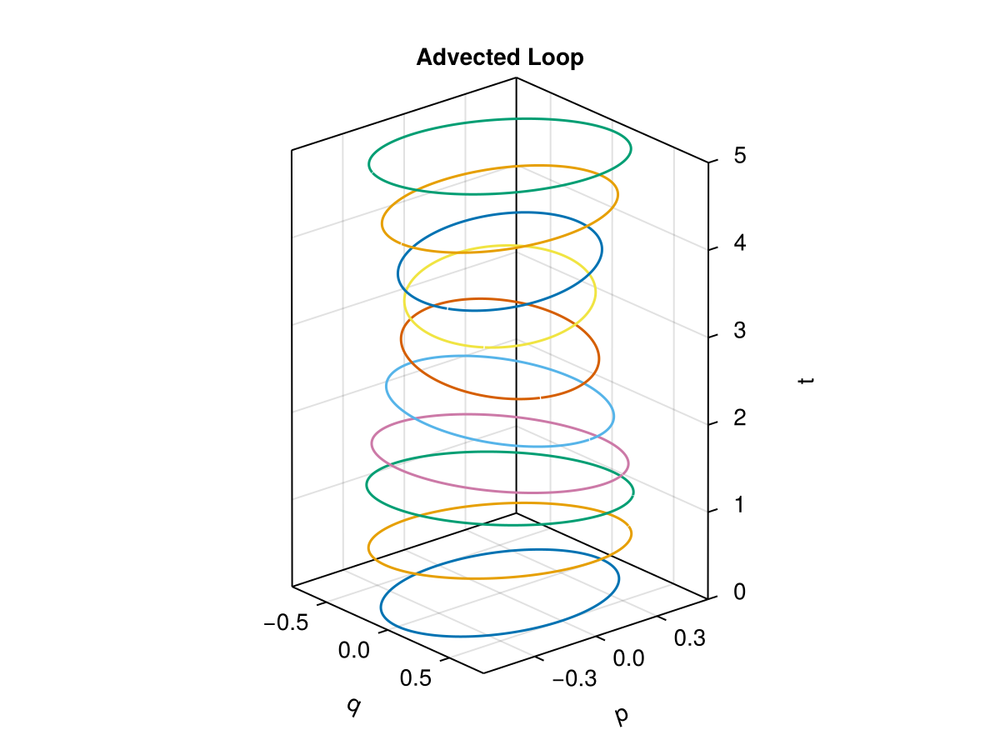
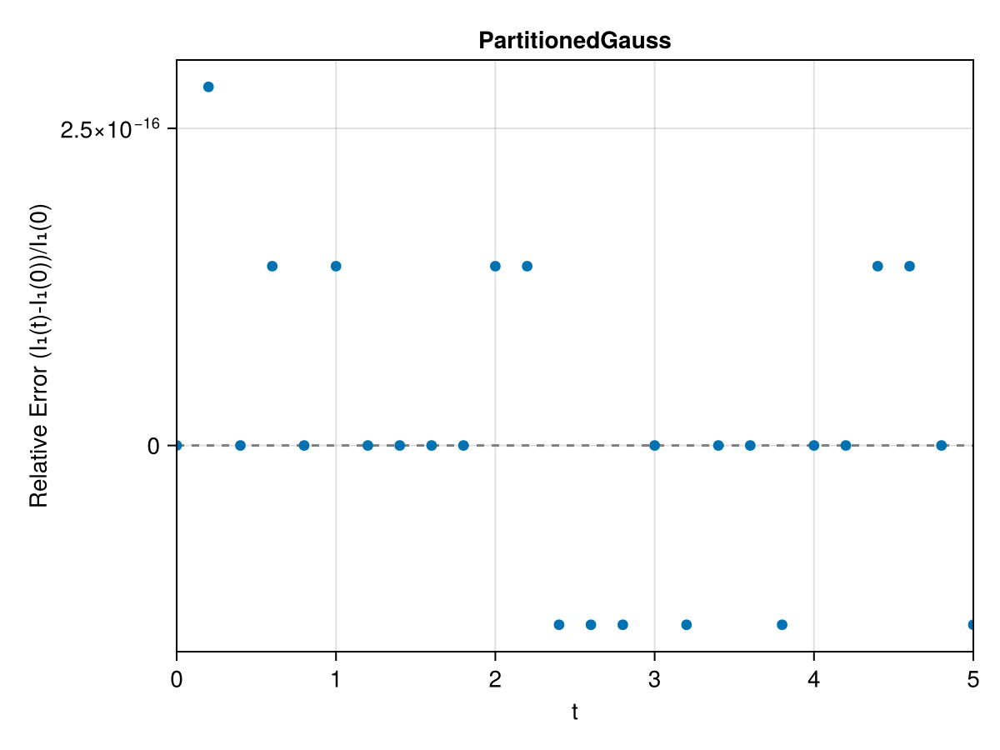
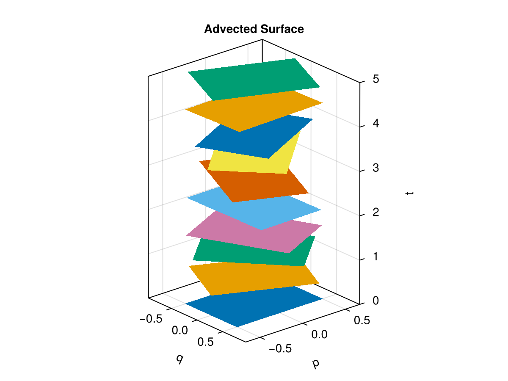
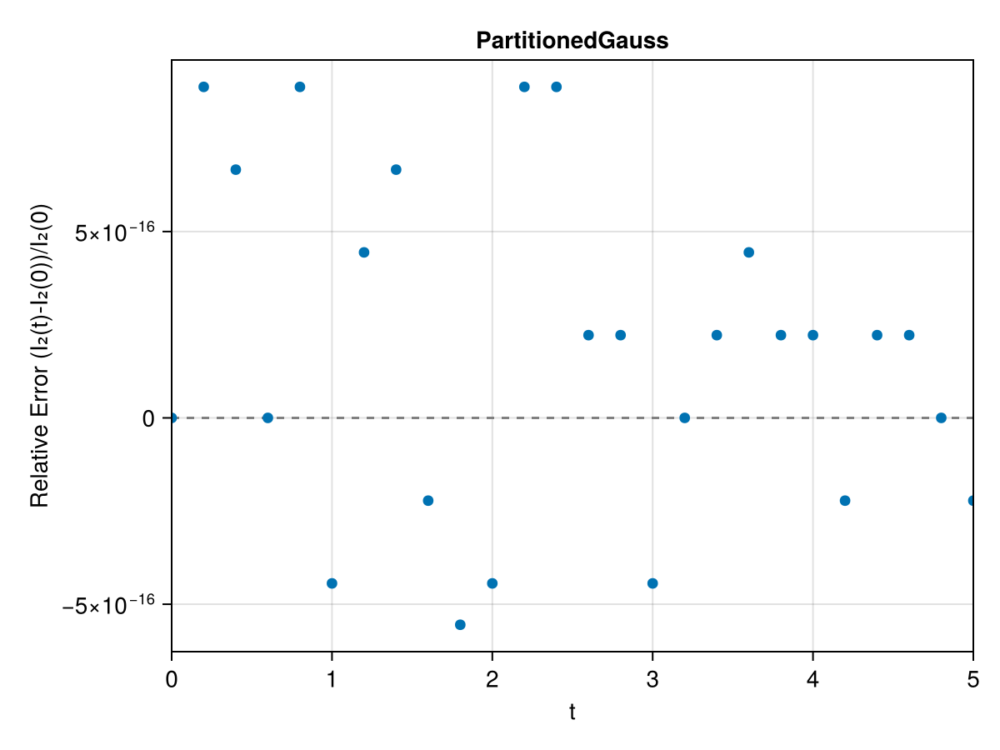
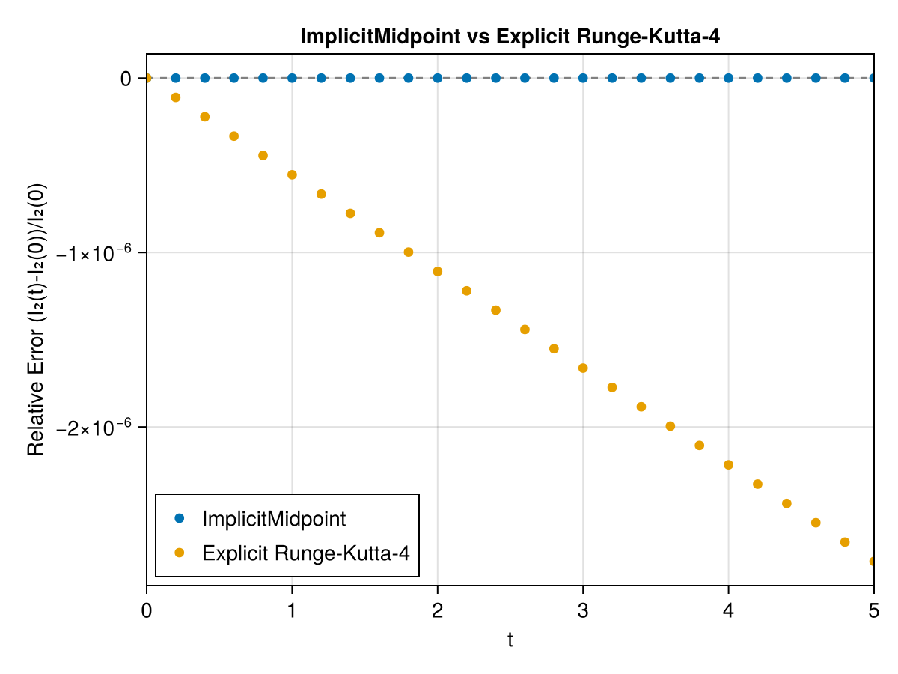

Harmonic Oscillator
The harmonic oscillator is the simplest canonical Hamiltonian system. With unit mass and spring constant $k$ its Hamiltonian is
\[H(q, p) = \frac{p^2}{2} + \frac{k \, q^2}{2} ,\]
so that the equations of motion in the canonical phase space $(q, p)$ read
\[\dot{q} = p , \qquad \dot{p} = -k \, q .\]
We use the ready-made problem from GeometricProblems.jl. For each invariant we show the advected curve or surface, and two plots of the relative error over time: one for the symplectic partitioned method PartitionedGauss (applied to the canonical HODEProblem), and one comparing the symplectic ImplicitMidpoint method with the non-symplectic explicit Runge-Kutta method RK4 (both applied to the plain ODEProblem whose state is the pair $[q, p]$).
Loading CairoMakie activates the plotting functions plot_loop, plot_surface and plot_invariant provided by the package's Makie extension (see the Reference).
using PoincareInvariants
using GeometricIntegrators
using GeometricProblems.HarmonicOscillator
using CairoMakie
probh = hodeproblem([0.0], [0.0]; timespan = (0.0, 5.0), timestep = 0.2) # canonical
probo = odeproblem([0.0, 0.0]; timespan = (0.0, 5.0), timestep = 0.2) # plain ODEFirst invariant
The first Poincaré invariant is the loop integral of the canonical one-form $\vartheta = p \, dq$,
\[I_{1} = \oint_{\gamma} p \, dq ,\]
which equals the area enclosed by the closed curve $\gamma$. We take a circle of radius $r = 1/2$ centred at the origin and integrate it with the three methods.
r = 0.5
init1 = ϕ -> (r * sinpi(2ϕ), r * cospi(2ϕ))
pi1 = CanonicalFirstPI{Float64, 2}(500)
sol1_pg = integrate(PIEnsembleProblem(probh, pi1, init1), PartitionedGauss(1))
sol1_im = integrate(PIEnsembleProblem(probo, pi1, init1), ImplicitMidpoint())
sol1_rk = integrate(PIEnsembleProblem(probo, pi1, init1), RK4())As the loop is advected by the flow it rotates rigidly in phase space (the harmonic oscillator is linear):
plot_loop(sol1_pg; xlabel = "q", ylabel = "p")
The symplectic partitioned method conserves the invariant to machine precision:
plot_invariant(pi1, sol1_pg; title = "PartitionedGauss")
ImplicitMidpoint is symplectic too and likewise conserves the invariant to machine precision, while the non-symplectic explicit Runge-Kutta method lets it drift:
plot_invariant(pi1, "ImplicitMidpoint" => sol1_im, "Explicit Runge-Kutta-4" => sol1_rk;
title = "ImplicitMidpoint vs Explicit Runge-Kutta-4")Second invariant
The second Poincaré invariant is the surface integral of the canonical two-form $\omega = dq \wedge dp$,
\[I_{2} = \int_{S} dq \wedge dp ,\]
i.e. the (signed) area of the surface $S$. We take a unit square centred at the origin.
init2 = (x, y) -> (x - 0.5, y - 0.5)
pi2 = CanonicalSecondPI{Float64, 2}(2_000)
sol2_pg = integrate(PIEnsembleProblem(probh, pi2, init2), PartitionedGauss(1))
sol2_im = integrate(PIEnsembleProblem(probo, pi2, init2), ImplicitMidpoint())
sol2_rk = integrate(PIEnsembleProblem(probo, pi2, init2), RK4())For the surface we advect a coarse regular grid (with the same symplectic method) so it can be drawn as a filled patch at each time:
grid = CanonicalSecondPI{Float64, 2}((15, 15), SecondFinDiffPlan)
solg = integrate(PIEnsembleProblem(probh, grid, init2), PartitionedGauss(1))
plot_surface(grid, solg; xlabel = "q", ylabel = "p")
plot_invariant(pi2, sol2_pg; title = "PartitionedGauss")
plot_invariant(pi2, "ImplicitMidpoint" => sol2_im, "Explicit Runge-Kutta-4" => sol2_rk;
title = "ImplicitMidpoint vs Explicit Runge-Kutta-4")
As for the first invariant, the two symplectic methods conserve the second invariant to machine precision, whereas the explicit Runge-Kutta method does not.